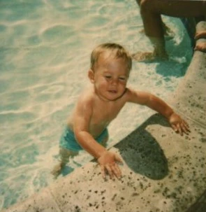
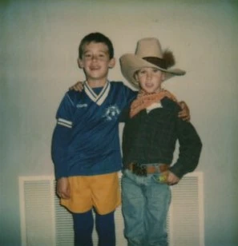
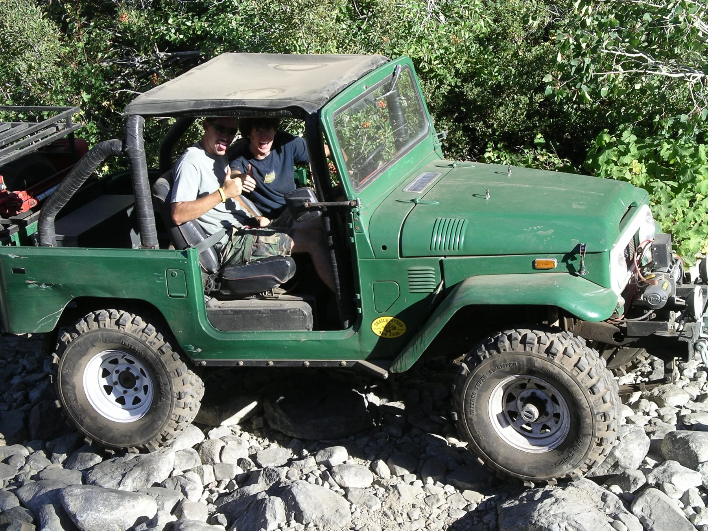
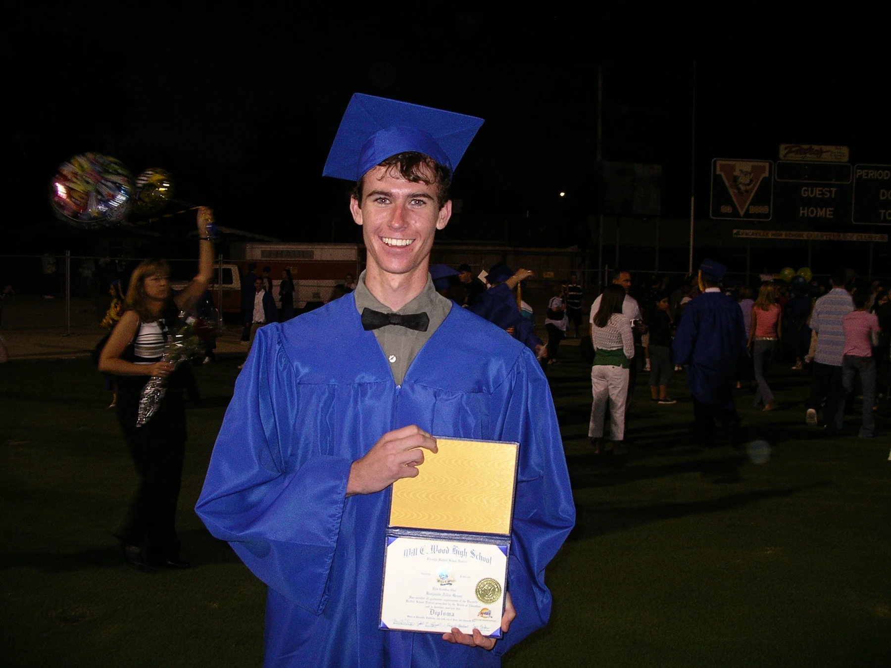
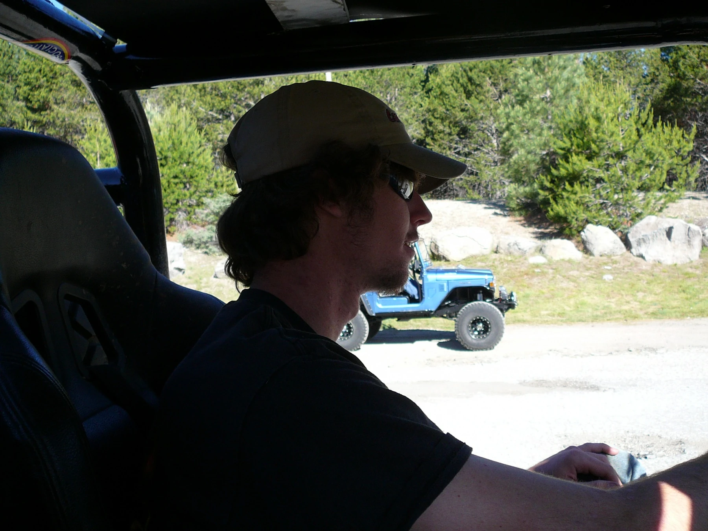

02 / HIS STORY
Eleven chapters.
Countless connections.
From childhood adventures and family projects to climbing, travel, programming, and the communities Sen helped build.

02 · Raising Two Remarkable Boys

03 · Building His Own World

04 · A World Beyond

05–11 · Finding His Own Way and Beyond
The complete illustrated book will be added after confirmation that it should be publicly downloadable.